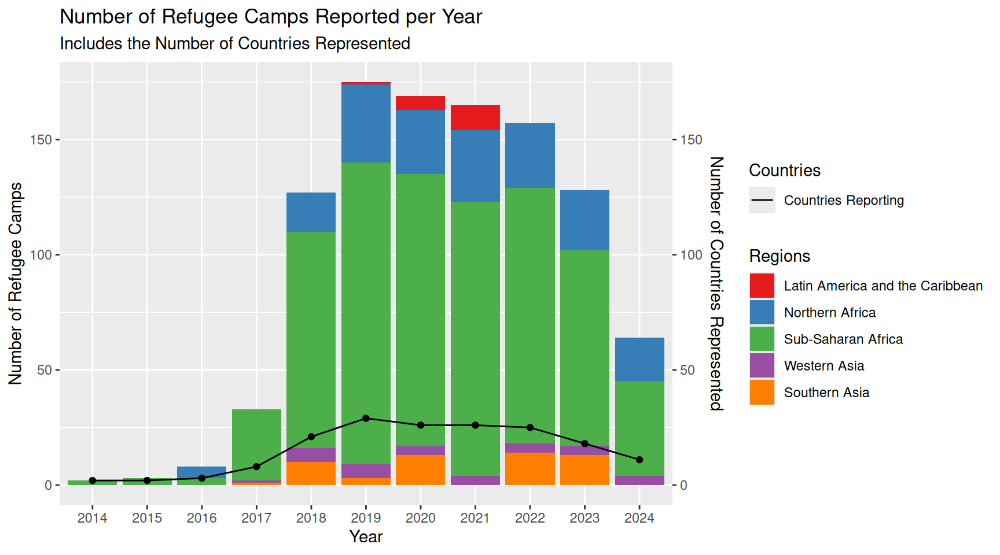
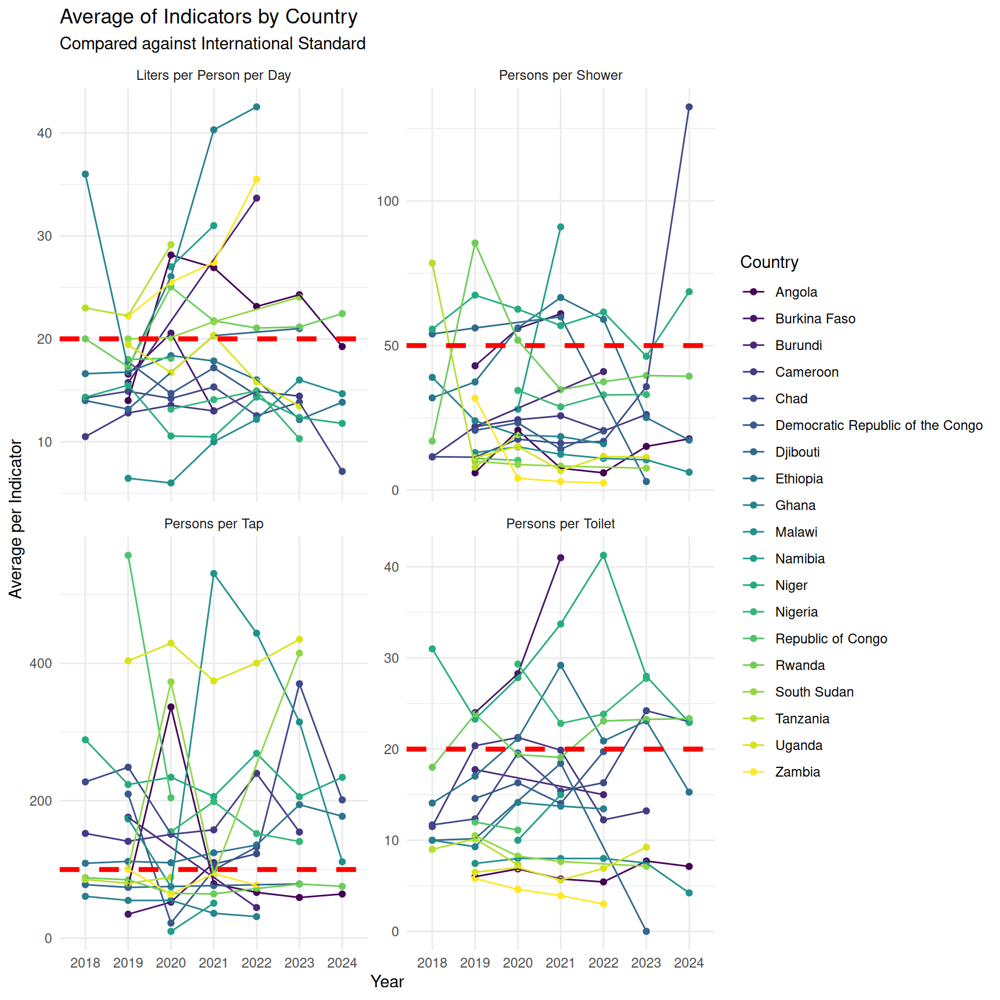
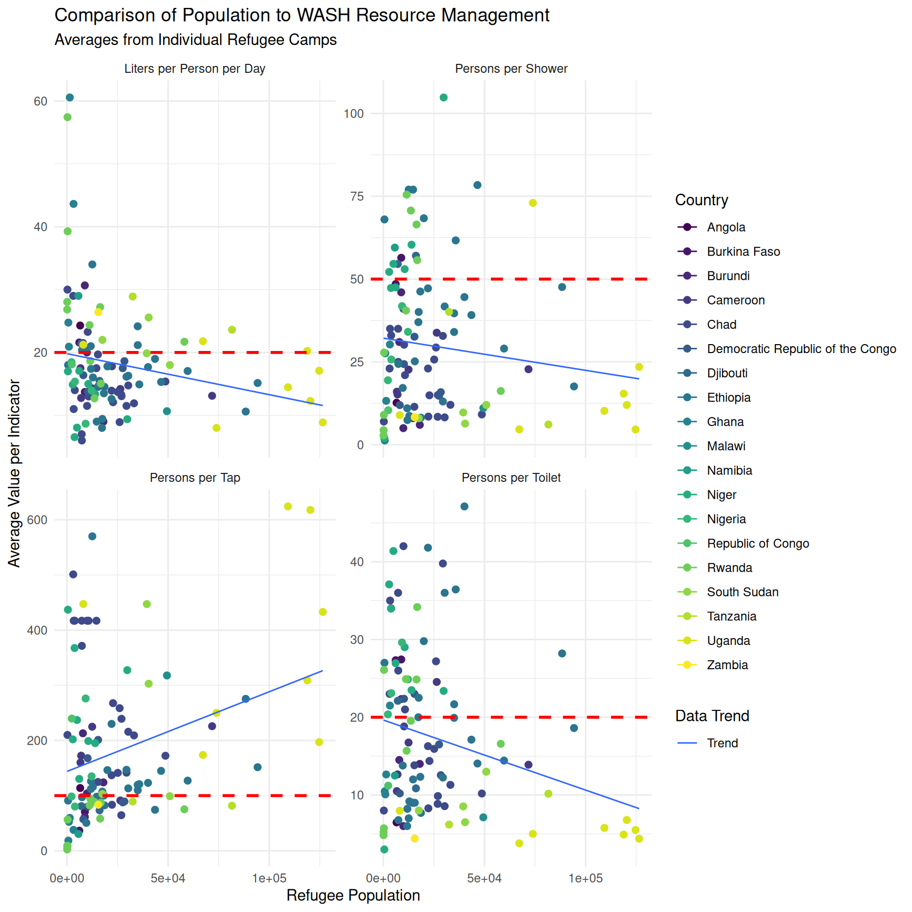

![]()
unhcr_wash_data <- read_csv(here::here("data/raw/refugee_camp_water_data.csv"))WASH Status in Refugee Camps Located in Sub-Saharan Africa
Introduction
Refugees face the unique and difficult challenge of trying to maintain their daily lives while displaced from their homes. It is critical that refugee camps are established in a way that meets people’s basic needs, including food, water, shelter, and medical care. In this analysis, I focus specifically on the international WASH (Water, Sanitation, and Hygiene) standards that were established by UNHCR and examine whether refugee camps over the last decade have been able to support these fundamental needs.
Methods
Reading the Data
The organization openwashdata has created a repository that compiles data collected from the UNHCR Information Management System (IRIS). This data set provides insight into refugee camps, including population size, reporting frequency, access to clean water, and availability of WASH resources such as taps, showers, and toilets.
Initial Data Tidying
The original data set was comprehensive and included information from reports from 227 refugee camp sites across 36 countries from 2013-2024.
# view the first few rows
head(unhcr_wash_data)# A tibble: 6 × 27
form_id start_date end_date location_id location_name country post_emergency
<dbl> <date> <date> <dbl> <chr> <chr> <chr>
1 5.44e7 2024-01-01 2024-12-31 518 Dagahaley Kenya <NA>
2 5.44e7 2024-01-01 2024-12-31 519 Hagadera Kenya <NA>
3 5.44e7 2024-01-01 2024-12-31 520 Ifo Kenya <NA>
4 5.44e7 2024-01-01 2024-12-31 5105 Ifo 2 Kenya <NA>
5 5.44e7 2024-12-02 2024-12-29 541 Buramino Ethiop… Post-emergency
6 5.44e7 2024-09-02 2024-09-29 209 Lovua settle… Angola Post-emergency
# ℹ 20 more variables: persons_per_handpump <dbl>, persons_per_tap <dbl>,
# liters_per_person_per_day <dbl>, non_chlorinated_0_cfu <dbl>,
# chlorinated_safe_water_quality <dbl>, households_with_toilet <dbl>,
# persons_per_toilet <dbl>, persons_per_shower <dbl>,
# persons_per_hygiene_promoter <dbl>, refugee_pop <dbl>,
# reporting_monthly <dbl>, liters_per_person_household <dbl>,
# potable_water_storage_10l <dbl>, protected_water_sources <dbl>, …The original data set contained many indicators, but some were repetitive and others could be more clearly categorized. This led me to reorganize the data set, combine similar parameters, and rename several variables for clarity.
# view the first few rows
head(wash_data_lim)# A tibble: 6 × 24
report_date start_date end_date region country location_name post_emergency
<chr> <date> <date> <fct> <chr> <chr> <chr>
1 2024-07 2024-01-01 2024-12-31 Sub-Sa… Kenya Dagahaley <NA>
2 2024-07 2024-01-01 2024-12-31 Sub-Sa… Kenya Hagadera <NA>
3 2024-07 2024-01-01 2024-12-31 Sub-Sa… Kenya Ifo <NA>
4 2024-07 2024-01-01 2024-12-31 Sub-Sa… Kenya Ifo 2 <NA>
5 2024-12 2024-12-02 2024-12-29 Sub-Sa… Ethiop… Buramino Post-emergency
6 2024-09 2024-09-02 2024-09-29 Sub-Sa… Angola Lovua settle… Post-emergency
# ℹ 17 more variables: refugee_pop <dbl>, persons_per_handpump <dbl>,
# persons_per_tap <dbl>, persons_per_shower <dbl>,
# persons_per_hygiene_promoter <dbl>, persons_per_toilet <dbl>,
# defecate_in_toilet_HH_perc <dbl>, toilets_per_HH_percentage <dbl>,
# solid_waste_disposal_HH_perc <dbl>, menstrual_hygiene_satisfaction <dbl>,
# access_to_soap_HH_perc <dbl>, liters_person_day <dbl>,
# liters_per_HH_per_day <dbl>, non_chlorinated_0_cfu <dbl>, …After the initial reorganization of the data, I decided to focus only on the core information relevant to my analysis. The indicators and case sites that were selected as “core information” were selected based on two criteria:
- Did the majority of the case sites report data for that indicator?
- Did the case site have substantial data across multiple indicators?
Applying these factors allowed me to narrow the data set from more than 6,425 observations across 27 variables to 6,376 observations across 13 variables.
# view the first few rows
head(wash_data_core)# A tibble: 6 × 13
report_date region country location_name post_emergency refugee_pop
<chr> <fct> <chr> <chr> <chr> <dbl>
1 2024-07 Sub-Saharan Afri… Kenya Dagahaley <NA> NA
2 2024-07 Sub-Saharan Afri… Kenya Hagadera <NA> NA
3 2024-07 Sub-Saharan Afri… Kenya Ifo <NA> NA
4 2024-07 Sub-Saharan Afri… Kenya Ifo 2 <NA> NA
5 2024-12 Sub-Saharan Afri… Ethiop… Buramino Post-emergency 49000
6 2024-09 Sub-Saharan Afri… Angola Lovua settle… Post-emergency 6262
# ℹ 7 more variables: persons_per_tap <dbl>, liters_person_day <dbl>,
# safe_water_perc <dbl>, persons_per_shower <dbl>, persons_per_toilet <dbl>,
# toilets_per_HH_percentage <dbl>, persons_per_hygiene_promoter <dbl>Table 1 provides additional insight to the overall status of refugee camps by country, specifically focusing on reporting activity and the conditions for which the camps were established.
| Refugee Camp Statistics by Country | |||||
| Data Reported bewteen 2013 and 2024 | |||||
| Country | Avg Refugee Camp Population | Number of Refugee Camps | Number of Reports | Number of Years Reported | % Refugee Camps Post-Emergency |
|---|---|---|---|---|---|
| Algeria | 17,967.12 | 5 | 248 | 6 | 100.00 |
| Angola | 6,882.89 | 1 | 44 | 6 | 100.00 |
| Bangladesh | 24,741.60 | 13 | 53 | 6 | 100.00 |
| Brazil | 544.27 | 10 | 15 | 2 | 0.00 |
| Burkina Faso | 6,755.45 | 2 | 23 | 4 | 100.00 |
| Burundi | 10,880.62 | 4 | 8 | 2 | 100.00 |
| Cameroon | 17,331.22 | 8 | 450 | 7 | 100.00 |
| Chad | 17,602.63 | 32 | 926 | 8 | 99.77 |
| Colombia | 438.12 | 1 | 16 | 3 | 12.50 |
| Democratic Republic of the Congo | 14,325.81 | 12 | 265 | 5 | 99.61 |
| Djibouti | 12,793.71 | 2 | 72 | 5 | 100.00 |
| Ethiopia | 33,585.71 | 27 | 971 | 10 | 94.68 |
| Ghana | 1,531.47 | 4 | 130 | 5 | 100.00 |
| Iraq | 7,166.33 | 5 | 249 | 8 | 100.00 |
| Jordan | 59,953.33 | 2 | 27 | 2 | 100.00 |
| Kenya | 88,838.18 | 4 | 215 | 8 | 100.00 |
| Malawi | 48,909.65 | 1 | 69 | 6 | 100.00 |
| Mozambique | 9,328.15 | 1 | 22 | 5 | 100.00 |
| Namibia | 5,160.20 | 1 | 6 | 3 | 100.00 |
| Nepal | 5,806.00 | 1 | 1 | 1 | 100.00 |
| Niger | 8,650.27 | 9 | 341 | 9 | 79.69 |
| Nigeria | 8,617.13 | 4 | 79 | 5 | 98.70 |
| Pakistan | 8,948.00 | 1 | 1 | 1 | 100.00 |
| Republic of Congo | 2,464.35 | 2 | 21 | 6 | 70.59 |
| Rwanda | 18,167.05 | 10 | 430 | 8 | 95.26 |
| Somalia | NaN | 1 | 1 | 1 | NaN |
| South Sudan | 39,863.06 | 7 | 238 | 7 | 100.00 |
| Sudan | 17,063.46 | 32 | 787 | 7 | 98.69 |
| Tanzania | 64,640.52 | 5 | 206 | 8 | 100.00 |
| Uganda | 108,457.13 | 10 | 370 | 6 | 95.44 |
| Zambia | 16,532.62 | 3 | 56 | 5 | 98.18 |
| Zimbabwe | 14,563.81 | 1 | 36 | 6 | 93.33 |
The refined data set was then save as a separate CSV file for future analysis.
write_csv(wash_data_core,
here::here("data/processed/refugee_camp_water_data_tidied.csv"))Results
Refugee camps are not isolated to any one region of the world. While some countries and regions that have a greater concentration than others, there is a consistent need to track, manage, and improve refugee camp conditions globally. Figure 1 shows the number of refugee camps being reported each year and compares those to the number of countries represented.

Because Sub-Saharan Africa contained the largest amount of available data, I further narrowed the analysis to countries within this region. Along with this, Table 2 provides the international standards used to evaluate WASH infrastructure in refugee camps.
| International WASH Standards | |
| Threshold | |
| Indicator | Baseline |
|---|---|
| liters_person_day | 20 |
| persons_per_tap | 100 |
| persons_per_toilet | 20 |
| persons_per_shower | 50 |
Focusing on these four indicators within Sub-Saharan Africa made it possible to evaluate the average conditions and availability of WASH resources at refugee camps over time, as shown in Figure 2.
The red dashed line in each figure represents the UNHCR standard for that indicator. While many countries average near the recommended threshold, there are also numerous cases where the WASH standards are not being met.

Taking this analysis a step further, Figure 3 illustrates the relationship between each indicator and the population size of individual refugee camps.
Again, the red dashed line represents the recommended UNHCR standard. These figures suggest that as refugee camp populations increase, access to WASH resources become more limited. It should also be noted that refugee camps are generally intended to accommodate about 20,000 people. Although this standard is not explicitly shown in the figures, it can be seen that many camps have exceeded that capacity.

Unfortunately, these results make it clear that many refugees have limited access to adequate WASH infrastructure within these camps.
Conclusions
Summary of Findings
The analysis on this data set would indicate that:
Refugee camps in Sub-Saharan Africa tend to fall below the UNHCR standards
Almost 58% of camps provide less than 20 liters of water per person per day
63% of taps in refugee camps service more than 100 people
Generally, an increase in population leads to a decrease in water resources per person
| Percentage of Refugee Camps that do not meet the International Standard | |
| Percentage by Indicator | |
| Indicator | Results |
|---|---|
| Liters per Person per Day | 57.89 |
| Persons per Tap | 63.16 |
| Persons per Toilet | 26.32 |
| Persons per Shower | 15.79 |
There are many reasons why WASH infrastructure may fall short in refugee camps. Overcrowding, resource contamination, geographic constraints, limited resources, secutiry concerns, and insufficient funding are just to name a few examples.
The purpose of this analysis is not to place blame on any particular country, region, or organization for failing to meet the UNHCR standards. Rather, it is intended to highlight that the current needs of many refugees are not being fully met. Table 3 shows that while access to toilets and showers is often more available, significant challenges remain regarding daily water availability and access to water collection points.
Questions and Next Steps
I believe that there is a lot of room to continue working with this data to gain more comprehensive insights to the real situations of refugees. While I was able to gain a fundamental understanding of the situation within Sub-Saharan Africa, I would love to do a cross-analysis of this with other regions in the world. From there, then further work can be done to see what refugee camps and regions are performing better than others in meeting these requirements and what actions could be taken to implement the same in under-performing areas.
I believe there is significant opportunity to continue working with this data set to gain a more comprehensive understanding of the realities faced by refugees. While this analysis focused on Sub-Saharan Africa, a valuable next step would be to compare these finding with those from other regions around the word. Then, additional work could be done to identify which camps are performing better at meeting the WASH standards and what practices could potentially be applied to areas that are struggling.
That being said, the conditions and quality of life within refugee camps cannot be fully understood through quantitative WASH data. It would be valuable to examine additional indicators such as access to food, education, community engagement, shelter quality, and length of stay in a refugee camp, alongside the WASH data, to develop a more complete picture of the conditions and well being of refugees.